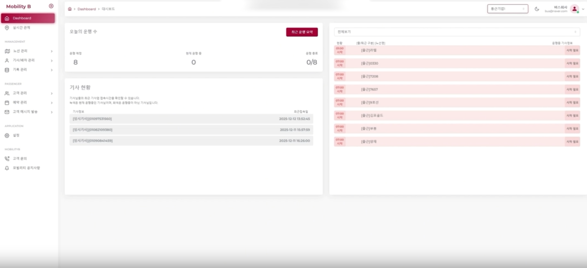

관리부담은 낮추고 운영효율은 극대화하는 차세대 기업맞춤형 통합 통근·셔틀 플랫폼
매년 증가하는 플랫폼 유지보수와 개발 비용은 기업의 성장을 가로막는 숨은 리스크입니다.
Mobility-B는 플랫폼의 개발 기간과 초기 구축 비용 없이 즉시 도입 가능한 검증된 모빌리티 플랫폼입니다.
관리자는 실시간 대시보드를 통해 운행 관제부터 투명한 비용 정산까지 한눈에 통제하며, 승객과 기사에게는 오차 없는 도착 정보와 편리한 탑승 시스템을 제공합니다.

Mobility-B의 도입과 동시에, 기업에 IT혁신의 바람이 시작됩니다.
기업의 통근을 책임지는 플랫폼에 걸맞은 365일 무결점 관리를 약속합니다.
수집된 운행 데이터는 이중화된 클라우드 서버에 안전하게 보관되며, 정기적인 보안 점검을 실시합니다.
24시간 주/야간 고객 응대 센터와 상시 모니터링 체계를 운영하여, 시스템 장애 및 버그 발생 시 지연 없이 즉각적으로 대응합니다.
OS 업데이트 및 단말기 호환성 등 필수 유지보수를 전담하여, 기업의 예측 불가능한 IT 추가 비용 리스크를 완전히 제거합니다.
귀사의 효율적인 시스템구축을 위한 맞춤형 컨설팅을 제공합니다.
맞춤형 컨설팅 신청하기